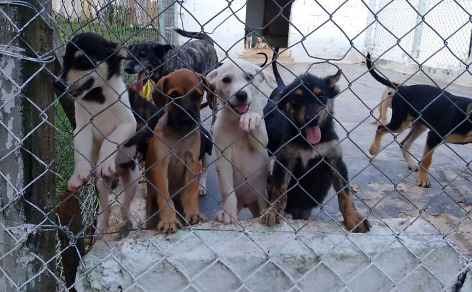
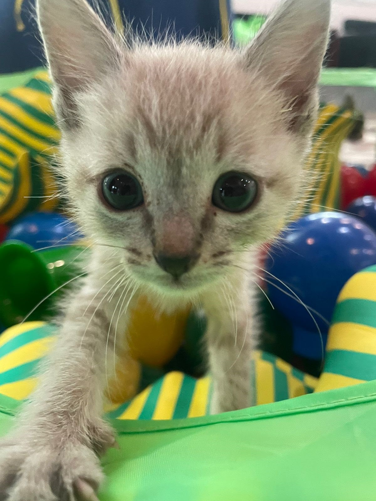
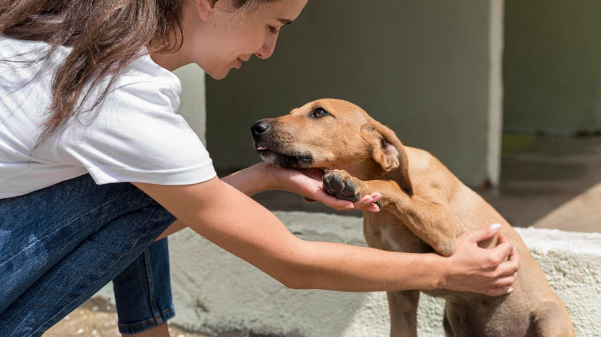

Resgate e Reabilitação
Resgatamos animais em risco e oferecemos cuidados veterinários.
Cuidando e protegendo animais abandonados!
A ONG Esperança nasceu em 2022 quando um pequeno grupo de voluntários começou a resgatar animais de rua no bairro. O trabalho cresceu através de campanhas locais, parcerias com clínicas veterinárias e apoio da comunidade. Desde então, já resgatamos dezenas de animais, oferecendo cuidados, castração e encaminhamento para adoção responsável.
Resgatar, cuidar e promover a adoção responsável de cães e gatos em situação de risco, fortalecendo a conscientização sobre bem-estar animal.
Ser referência regional em resgate e reabilitação animal, incentivando o amor e o cuidado pelos animais abandonados.

Resgatamos animais em risco e oferecemos cuidados veterinários.

Feiras de adoção e acompanhamento pós-adoção.

Programa de treinamento e seleção de voluntários.